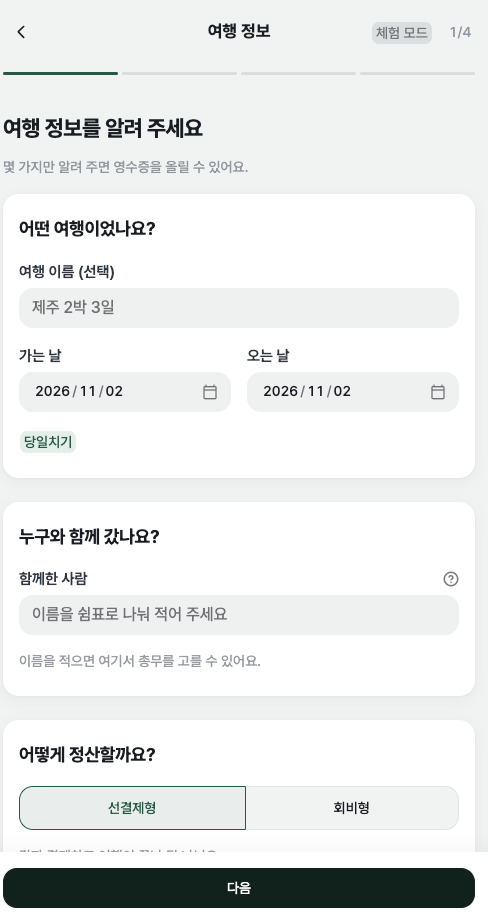
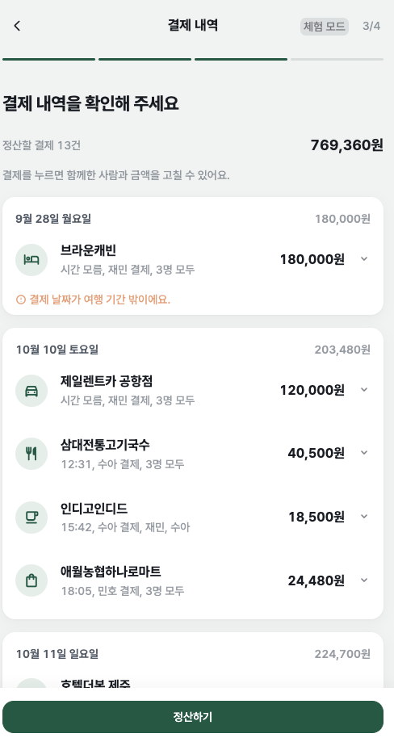
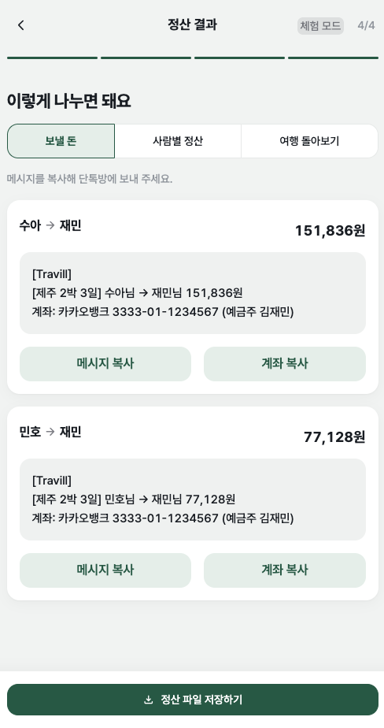
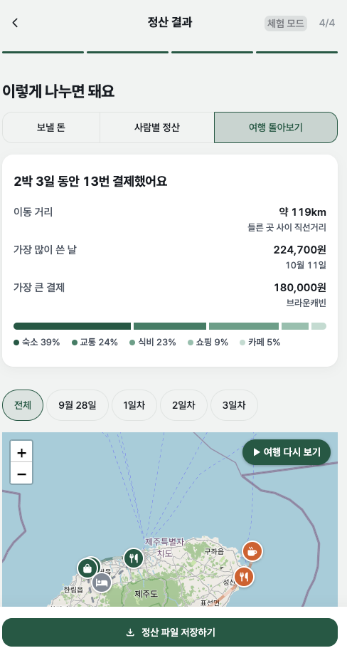
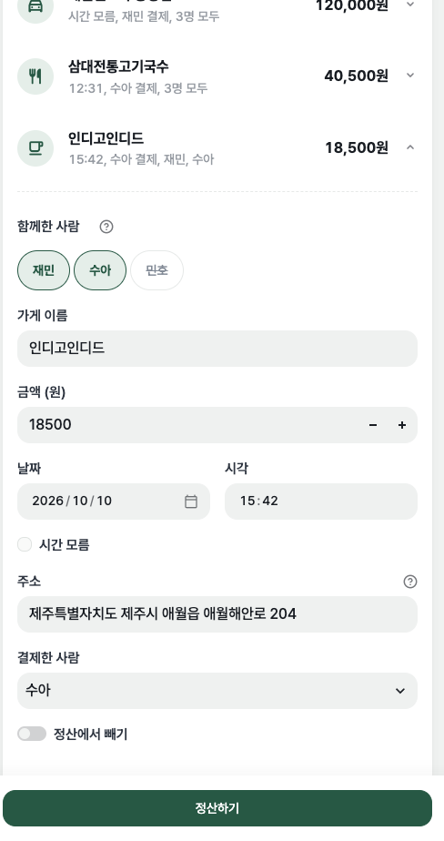

Travill(트래빌) · 원티드 1차 프로젝트 · 개발
영수증을 올리면 AI가 읽고, 송금까지 정리해 주는 정산 앱
제주 2박 3일 10.10 ~ 10.12
769,360원
1. 문제 정의
영수증이 열 장 넘게 쌓인다.
가게·시각·금액을 손으로 옮긴다.
"카페엔 누가 빠졌더라?"
기억에 기대 1/N로 나눈다.
숙소는 총무, 밥은 친구가 냈다.
누가 누구에게 얼마를 보내지?
2. 서비스 소개

1 여행 정보
사람, 총무, 정산 방식, 총무 계좌

2·3 영수증 → 결제 내역
AI가 읽고 날짜별로 정리. 눌러서 빠진 사람 빼기

4 보낼 돈
송금 횟수가 적게 짝짓기. 메시지·계좌 복사

여행 돌아보기
날짜별 경로 지도, 다시 보기
2. 시연

영수증 6장과 풍경 사진 1장을 한 번에
풍경 사진은 "영수증이 아니어서 제외했어요"
AI가 잘못 읽은 금액을 결제 내역에서 바로잡기
카페에 없던 친구를 이름만 눌러 빼기
보낼 돈에서 송금 메시지와 계좌 복사
지도에서 자동차가 여행 경로를 다시 달리기
영상에서는 이 컴퓨터의 로컬 모델(Ollama)로 읽는다. 배포판은 Gemini API
3. 어떻게 동작하는가 · 구조
화면app.py · ui/
계산core/ · streamlit을 모른다
바깥호출은 core에서만
모든 층이 같은 데이터 약속(Receipt · Expense · Trip)을 쓴다. 인식기는 같은 함수 모양이라 설정 한 줄로 바꾼다.
3. 어떻게 동작하는가 · 오류 처리
| 상황 | 막는 방법 | 사용자에게 보이는 것 |
|---|---|---|
| 영수증이 아닌 사진·PDF | AI가 not_receipt로 판정, 확장자 확인 | "영수증이 아니어서 제외했어요", "이미지 파일만 올릴 수 있어요" |
| AI 호출 실패 | 키·하루 한도·분당 한도·과부하·모델·연결·서버 7종으로 나눔. 하루 한도는 재시도 안 함 | "오늘 쓸 수 있는 AI 횟수를 다 썼어요. 내일 다시 읽을 수 있어요." |
| 13장이 같은 이유로 실패 | 같은 이유는 한 줄로 묶음 | "a.jpg 외 12장: 읽지 못했어요 … 직접 추가할 수도 있어요" |
| 한 장이 깨진 파일 | 3장씩 병렬, 실패한 장만 빼고 계속 | 나머지는 정상 인식 |
| 정산할 수 없는 결제 | 함께한 사람 0명·금액 0원이면 정산 전에 막음 | "정산 전에 고칠 게 있어요" + 돌아가기 |
| 민감정보 | 카드번호 추출 안 함, 사진 저장 안 함, EXIF 제거, 오류에 키 안 섞음 | 업로드 화면 안내, 대화 기록에서 키 문자열 0회 확인 |
3. 설계 판단과 맞바꾼 것
품목 단위로 나누면 정확하지만 입력이 길어진다. 결제 단위로 두고, 빠진 사람만 누르게 했다.
맞바꾼 것: 한 결제 안의 메뉴별 분담
AI가 틀릴 수 있다고 보고 모든 결제를 결제 내역에서 펼쳐 고칠 수 있게 했다.
맞바꾼 것: 한 번 더 누르는 수고
배포판은 Gemini API로 읽는다. 테스트와 평가는 여러 번 돌려야 해서, 과금과 하루 한도가 걱정돼 내 맥북의 로컬 모델로 돌렸다.
맞바꾼 것: 로컬은 장당 20~40초로 느리다
뺀 기능: 해외 결제와 환율, 품목 단위 정산, 로그인·저장(대신 정산 파일 저장·불러오기), 사진 위치로 경로 추가
4. 평가 리포트
생성 영수증 13장 · 로컬 qwen3-vl:8b-instruct · 핵심 3필드 = 상호·일시·금액 모두 정답
v1·v2란? AI에게 "영수증을 이렇게 읽어라"라고 주는 지시문(프롬프트)이다. v1은 첫 버전, v2는 v1이 틀린 것을 보고 규칙 두 개를 더한 버전.
13장뿐인 생성 이미지이고, 같은 이미지를 보고 고쳐 향상이 크게 보일 수 있다. 호텔 체크인 1건은 아직 틀린다. Gemini는 무료 하루 한도로 8장까지 재서 모두 정답.
5. AI 활용 과정
core/는 streamlit을 import하지 않는다 · 키와 실물 영수증은 커밋하지 않는다 · 프롬프트를 바꾸면 ai-log에 적는다 · 새 기능은 실패하는 테스트부터
진행 순서
화면
내 규칙
Orca에서 기능마다 작업 공간(git worktree)을 따로 띄워 병렬 개발 · PR 26개 · "머지할 땐 계속 묻고 해"를 메모리에 저장해 매번 승인
AI가 한 일설계 초안, 구현과 테스트, 리뷰, 화면 확인(내장 브라우저로 직접 조작·캡처), 문서
사람이 정한 일두 정산 방식, 결제별 참석자, 무료 모델, 토스 원칙의 디자인, 앱 이름, 머지 승인
5. AI가 틀렸고, 잡아서 고친 사례 (12건 중 3건)
| AI가 틀린 것 | 어떻게 알았나 | 어떻게 고쳤나 |
|---|---|---|
| 없는 모델 이름 계획의 gemini-2.5-flash를 확인 없이 씀 | 실제 키로 1장 시험 → 404 "no longer available" | 쓸 수 있는 모델 4개를 같은 영수증으로 비교해 바꿈 |
| 유료 등급 전제의 비용 안내 | 14장을 올리다 429 반복, 오류 상세의 한도 종류 확인 | 무료 등급(하루 20회)으로 정정, 평가는 로컬 모델로 |
| "줄 전체가 눌린다"고 보고 실제로는 왼쪽 100px만 눌림 | 내가 직접 써 보다가 화살표가 안 눌림 | 줄 위 네 지점을 실제로 눌러 원인 확인, 수정, 회귀 테스트 |
교훈: AI의 "됐다"는 근거가 아니다. 실제 키, 실제 클릭, 실패하는 테스트로 확인한다.
6. 회고
Travill
| GitHub | github.com/KJM0424/travel-bill-wanted1 |
| 배포 | travill.streamlit.app |
| 시연 영상 | docs/demo/travill-demo.mp4 |
| 프롬프트 | 프롬프트.md |